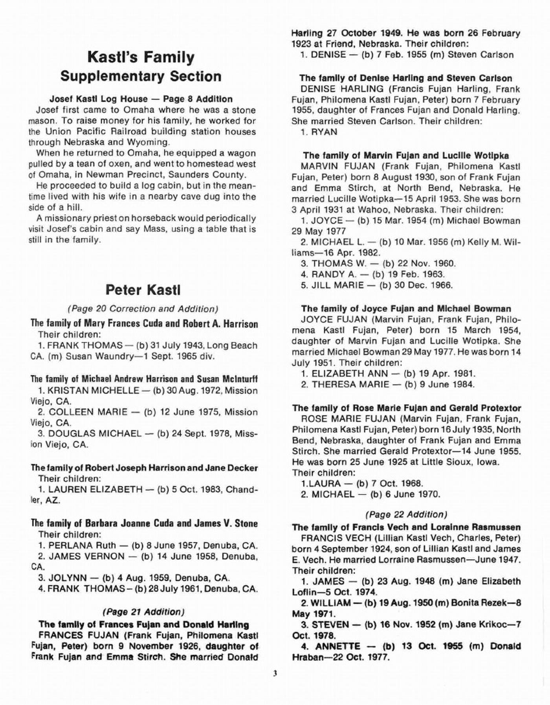

The book · Supplementary Section (1986)
Supplement page 3 Kastl's Family Supplementary Section


Transcription
Kastl's Family Supplementary Section
Josef Kastl Log House — Page 8 Addition
Josef first came to Omaha where he was a stone mason. To raise money for his family, he worked for the Union Pacific Railroad building station houses through Nebraska and Wyoming.
When he returned to Omaha, he equipped a wagon pulled by a tean [sic] of oxen, and went to homestead west of Omaha, in Newman Precinct, Saunders County.
He proceeded to build a log cabin, but in the meantime lived with his wife in a nearby cave dug into the side of a hill.
A missionary priest on horseback would periodically visit Josef's cabin and say Mass, using a table that is still in the family.
Peter Kastl
(Page 20 Correction and Addition)
The family of Mary Frances Cuda and Robert A. Harrison
Their children:
- FRANK THOMAS — (b) 31 July 1943, Long Beach CA. (m) Susan Waundry—1 Sept. 1965 div.
The family of Michael Andrew Harrison and Susan McInturff
- KRISTAN MICHELLE — (b) 30 Aug. 1972, Mission Viejo, CA.
- COLLEEN MARIE — (b) 12 June 1975, Mission Viejo, CA.
- DOUGLAS MICHAEL — (b) 24 Sept. 1978, Mission Viejo, CA.
The family of Robert Joseph Harrison and Jane Decker
Their children:
- LAUREN ELIZABETH — (b) 5 Oct. 1983, Chandler, AZ.
The family of Barbara Joanne Cuda and James V. Stone
Their children:
- PERLANA Ruth — (b) 8 June 1957, Denuba, CA.
- JAMES VERNON — (b) 14 June 1958, Denuba, CA.
- JOLYNN — (b) 4 Aug. 1959, Denuba, CA.
- FRANK THOMAS – (b) 28 July 1961, Denuba, CA.
(Page 21 Addition)
The family of Frances Fujan and Donald Harling
FRANCES FUJAN (Frank Fujan, Philomena Kastl Fujan, Peter) born 9 November 1926, daughter of Frank Fujan and Emma Stirch. She married Donald Harling 27 October 1949. He was born 26 February 1923 at Friend, Nebraska. Their children:
- DENISE — (b) 7 Feb. 1955 (m) Steven Carlson
The family of Denise Harling and Steven Carlson
DENISE HARLING (Francis Fujan Harling, Frank Fujan, Philomena Kastl Fujan, Peter) born 7 February 1955, daughter of Frances Fujan and Donald Harling. She married Steven Carlson. Their children:
- RYAN
The family of Marvin Fujan and Lucille Wotipka
MARVIN FUJAN (Frank Fujan, Philomena Kastl Fujan, Peter) born 8 August 1930, son of Frank Fujan and Emma Stirch, at North Bend, Nebraska. He married Lucille Wotipka—15 April 1953. She was born 3 April 1931 at Wahoo, Nebraska. Their children:
- JOYCE — (b) 15 Mar. 1954 (m) Michael Bowman 29 May 1977
- MICHAEL L. — (b) 10 Mar. 1956 (m) Kelly M. Williams—16 Apr. 1982.
- THOMAS W. — (b) 22 Nov. 1960.
- RANDY A. — (b) 19 Feb. 1963.
- JILL MARIE — (b) 30 Dec. 1966.
The family of Joyce Fujan and Michael Bowman
JOYCE FUJAN (Marvin Fujan, Frank Fujan, Philomena Kastl Fujan, Peter) born 15 March 1954, daughter of Marvin Fujan and Lucille Wotipka. She married Michael Bowman 29 May 1977. He was born 14 July 1951. Their children:
- ELIZABETH ANN — (b) 19 Apr. 1981.
- THERESA MARIE — (b) 9 June 1984.
The family of Rose Marie Fujan and Gerald Protextor
ROSE MARIE FUJAN (Marvin Fujan, Frank Fujan, Philomena Kastl Fujan, Peter) born 16 July 1935, North Bend, Nebraska, daughter of Frank Fujan and Emma Stirch. She married Gerald Protextor—14 June 1955. He was born 25 June 1925 at Little Sioux, Iowa. Their children:
- LAURA — (b) 7 Oct. 1968.
- MICHAEL — (b) 6 June 1970.
(Page 22 Addition)
The family of Francis Vech and Lorainne Rasmussen
FRANCIS VECH (Lillian Kastl Vech, Charles, Peter) born 4 September 1924, son of Lillian Kastl and James E. Vech. He married Lorraine Rasmussen—June 1947. Their children:
- JAMES — (b) 23 Aug. 1948 (m) Jane Elizabeth Loflin—5 Oct. 1974.
- WILLIAM — (b) 19 Aug. 1950 (m) Bonita Rezek—8 May 1971.
- STEVEN — (b) 16 Nov. 1952 (m) Jane Krikoc—7 Oct. 1978.
- ANNETTE — (b) 13 Oct. 1955 (m) Donald Hraban—22 Oct. 1977.
People from the line of descent on this page
- Josef Kastl 1840–1921
- Dorota Blaha 1833–1919
Transcriber’s notes
First text page of the 1986 Supplementary Section (supplement page 3). Title is printed on two lines ('Kastl's Family' / 'Supplementary Section'). The right column begins mid-sentence ('Harling 27 October 1949...'), continuing the Frances Fujan / Donald Harling entry from the bottom of the left column; reading order is preserved accordingly. Last entry (Francis Vech family) may continue on the next page. Printed as-is: 'tean of oxen'; 'Denuba, CA.' (for Dinuba); 'PERLANA Ruth' in mixed case; 'Francis Fujan Harling' in Denise Harling's lineage though her mother is 'Frances Fujan' elsewhere; heading 'Lorainne Rasmussen' vs text 'Lorraine Rasmussen'; Rose Marie Fujan's lineage reads '(Marvin Fujan, Frank Fujan, ...)' although she is called daughter of Frank Fujan and Emma Stirch. Second half of the right column (Francis Vech children 1-4) and the top of the right column are printed in bold type.